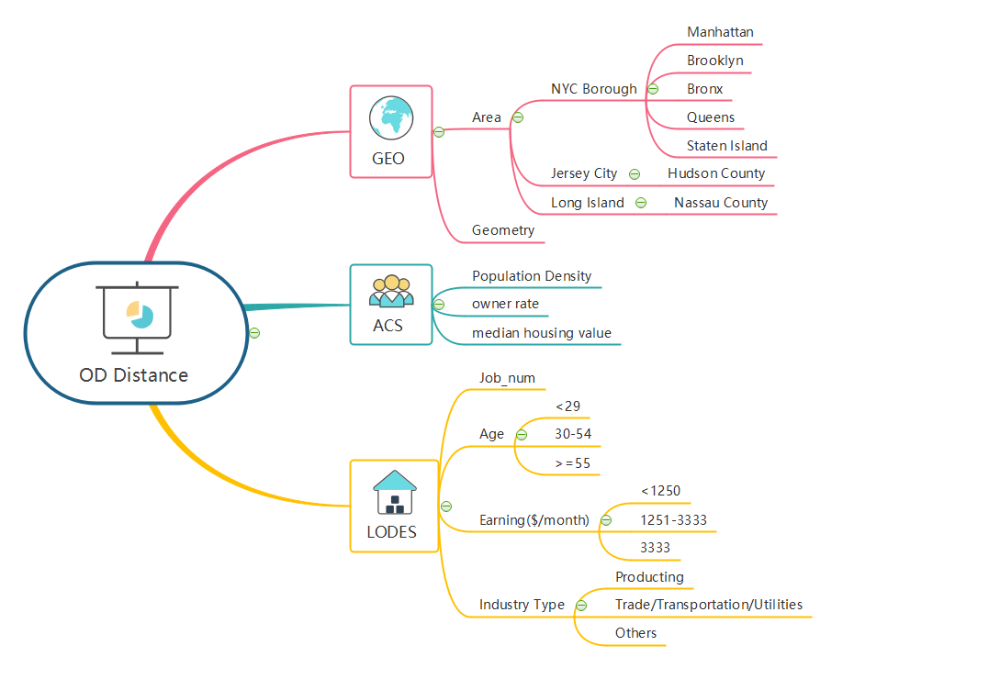

Analysis & Methods
1.Home and Job Distribution
Spatial Join/ Folium Map: After wrangling and cleaning the data, to visualize population and jobs, our team utilized geospatial joins for the dataset in the NYC metro region. Then, we will use geopandas and folium maps to visualize them.
Seaborn - Line Chart: To compare the job trend before and after the pandemic, we used a line chart to show the recent 20 years’ (2002-2022) job numbers.
Other Exploratory Data Analysis: Some other datasets, such as median income and population density, could also hint at the reasons why certain areas in New York Metro Region attract neighborhood employment populations. By conducting EDAs, we could have a sense of the importance, geographical distribution and changing trend of the features, which will help us to build a more reasonable predictive Machine Learning models.
2.Commuting Pattern
OD Visualization: OD data will help show the commuting pattern. The origin will be the home place in the metro region, and the destination will be within New York City. It will show how NYC attracts people in the surrounding area in employment.
Distance Calculation: With the dataset we have, our team calculated the OD distance (from home place census tract centroid to workplace census tract centroid), which will be our target variable for Machine Learning model.
3.Variables Contributing to the Job-home Mismatch

To build our model, we decided to integrate a variety of factors that would be helpful for the OD distance prediction. With the machine learning model, we can know the most important features contributing to long-distance commuting. We will also compare the important features before and after COVID-19 to see if there is any difference. Here are the attributes of the variables:
Demographic Data: Job is closely connected with income and salary, which might be important variables to predict future job distributions.
- Income: Personal income will also be an important factor to push people choose long-distance commuting.
- Population density: jobs are closely connected with population density, and future population will have an effect on future employment patterns.
- Age: Residents’ age implies how many working population are there in the group.
Home Price: Many people choose to live in the surrounding area and work in New York because of vacations. So, home prices could also be an important factor.
Job Patterns: the number, type of jobs are important factors to attract people.
- Total number of jobs: Generally, if there are many jobs in an area, it will be attractive to people.
- Types of job: Types of job sometimes show the method of someone’s work mode, which might also be a factor.
Our analysis will be based on random forest regression as it shows a degree of high accuracy.